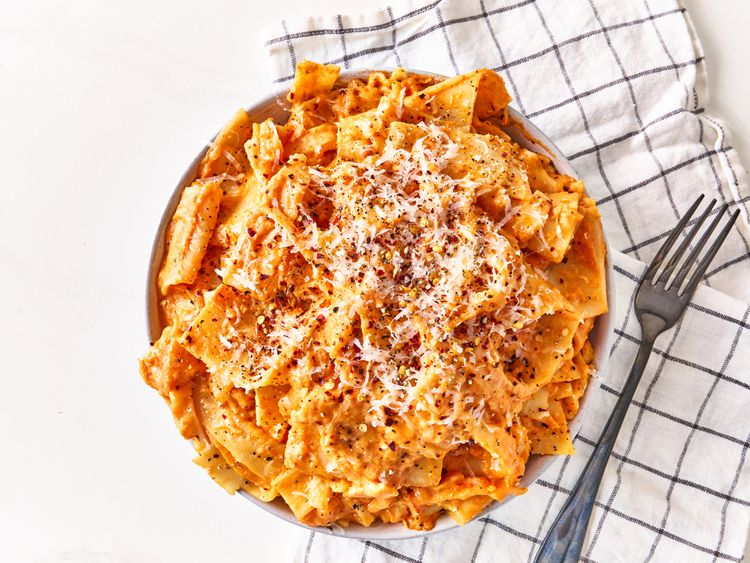

Cheesy Lasagna Recipes

This 3 ingredient cheesy lasagna sheet pasta could not be easier. Serve topped with Parmesan cheese, red pepper
flakes, and freshly cracked black pepper if you like.
By Natalie Gravois
Prep Time:
5 mins
Cook Time:
15 mins
Total Time:
20 mins
Servings:
6
Ingredients
8 ounces lasagna noodles, broken in half
1 (24-ounce) jar tomato sauce
8 ounces shredded whole milk mozzarella cheese
Directions
-
Bring a large pot of lightly salted water to a boil. Cook lasagna noodles in the boiling water, stirring
occasionally, until tender yet firm to the bite, 10 to 12 minutes.
-
Strain noodles and return to the pot. Add tomato sauce and cook on medium heat until sauce is heated
through, about 5 minutes.
-
Add cheese and stir until cheese is melted. Serve immediately.